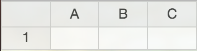

Comma Chameleon is a CSV editor. You can enter data, describe, validate and share it so it's easy for everyone to use.
When you open Comma Chameleon, a new empty table is conveniently waiting for your data. Just start typing.
To create a new data table, either: